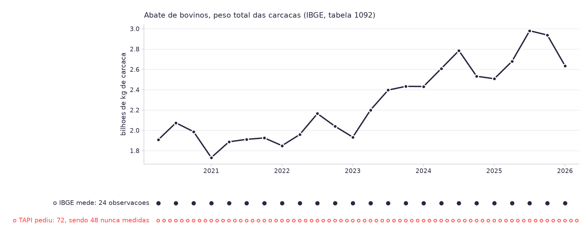
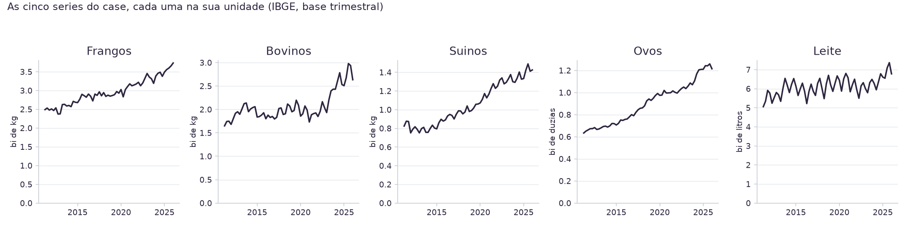

08h00 · 10h00
Autoestudo na Adalove: qualidade dos dados, taxonomia, o que é Machine Learning [16].
10h00 · 10h15
Daily. Checkpoint: todas as duplas conseguiram ler o CSV de abate bovino?
10h15 · 12h00
Sete blocos de 15 minutos, com bem mais figura do que texto. Papel e caneta também.
Duas coisas, e a segunda é a que organiza a aula de hoje:
1. a leitura do CSV de abate bovino, com os 117 registros contados e a unidade conferida;
2. o reparo de que a coluna periodo vem em
trimestres, não em meses.
Pergunta disparada:
o TAPI da LDC pede previsão mensal. Nosso dado é trimestral.
O que fazemos com isso?
Não respondam ainda pelo lado técnico. Respondam pelo lado do projeto.
Goodfellow, Bengio e Courville, Deep Learning (2016), Fig. 1.4 [3]. NVIDIA [4] e IBM [5] confirmam o aninhamento de três camadas; o livro-texto acrescenta a quarta. A camada que quase toda reprodução popular apaga, Representation Learning, é o que separa engenharia manual de atributo de aprendizado do próprio atributo, e é exatamente o motivo de a Aula 04 (Feature Engineering) existir.
As três aparecem em fontes com peso técnico, e discordam entre si. A lição não é decorar qual está certa: é que taxonomia de campo técnico é convenção sob disputa, e a próxima figura bonita de um pitch merece a mesma pergunta.
Chollet [11]: um sistema de ML é treinado, não programado à mão. As regras aprendidas continuam sendo aplicadas por um programa comum: o que muda é a origem da regra, não a necessidade de código.
O coeficiente fixo que a LDC usa hoje para converter proteína em ração é a caixa de cima: programação tradicional, e funciona. Não é atraso, é a Regra 1 do guia de engenharia do Google [12]: não tenha medo de lançar sem ML.
A Regra 3 do mesmo guia [12] dá o critério objetivo para trocar de caixa: o guia recomenda migrar de heurística para modelo assim que as regras viram uma lista difícil de manter, porque o custo de manter a heurística passa a ser maior que o de treinar um modelo.
Gartner, Analytic Value Escalator [8]. No case: descritiva é consultar o abate de frango do trimestre; diagnóstica é a queda de bovinos em 2021; a preditiva de 8 trimestres é o Modelo 1; a prescritiva (quanto comprar, e quando) é o Modelo 3, e é o que a LDC de fato quer.
Classifiquem cada pergunta do case em descritiva, diagnóstica, preditiva ou prescritiva. Duas delas admitem mais de uma resposta: a discussão é o exercício.
- Qual das cinco séries tem o histórico mais longo?
- A demanda de ração vai crescer mais que a produção de proteína nos próximos dois anos?
- O que explica a produção de leite captada formalmente ser menor que a produção total estimada?
- Devemos travar contrato de farelo de soja agora ou esperar o próximo trimestre?
O guia original [2] usa seta simples para dependência e seta dupla só para relações reconhecidamente repetíveis. Duas voltas documentadas: Preparação ↔ Modelagem (técnica de modelagem exige reformatar dado já preparado) e Dados ↔ Negócio (ajustar objetivo à luz do que o dado permite).
Quase toda reprodução de blog desenha só o círculo externo tracejado (aqui, em coral) e apaga as duas voltas internas. A diferença importa: sem elas, "vamos voltar ao entendimento do negócio" parece fracasso de projeto. Com elas, é uso previsto do processo.
Foi exatamente a volta 1↔2 que aconteceu na fundação deste acervo, antes de existir uma linha de modelo: o dado revelou base trimestral, e o pedido foi renegociado.
A ordem de leitura da esquerda para a direita é a sequência mais comum, não uma regra rígida: o diagrama anterior mostrou onde ela volta.
"Mais de 80% dos projetos de IA não chegam à produção com valor real. Liderança e enquadramento do problema, não limitação de tecnologia, são a causa-raiz mais citada."
RAND Corporation, The Root Causes of Failure for Artificial Intelligence Projects, 2024 [13]. Entrevistas estruturadas com 65 cientistas de dados e engenheiros.
O estudo cita um exemplo direto: liderança de negócio às vezes pede "um modelo que diga o preço a definir", quando precisa de "o preço que dá a maior margem, não o que vende mais unidades". A métrica errada entra antes da primeira linha de código, e nenhuma técnica de modelagem corrige isso depois. É o mesmo achado, com número, do estudo qualitativo de James Taylor sobre CRISP-DM: o fracasso nasce na fase 1, não na fase 4.
- Escrevam uma frase por fase do CRISP-DM, aplicada ao case da LDC. A frase precisa dizer o que vocês vão fazer, não o que a fase significa.
- Marquem qual das seis frases vocês ainda não conseguem escrever com o que sabem hoje.
- Essa frase que faltou é o item mais honesto da sua ART.1.

O painel de baixo não interpola nada: mostra a cadência real. O IBGE mede 1 ponto por trimestre. O TAPI, lido ao pé da letra, pediria 3 por trimestre. Dois de cada três pontos mensais nunca existiram, em nenhuma tabela do SIDRA [1].
Por que o IBGE publica trimestral. Di Fonzo, para a Eurostat [14]: institutos de estatística fazem levantamento amostral de qualidade suficiente com periodicidade anual ou trimestral porque o custo de coleta não sustenta frequência maior. O trimestre é o ponto de equilíbrio entre custo e utilidade, não uma limitação técnica de quem constrói o modelo.
O que existe para desagregar. Métodos como Chow-Lin e Denton [14] produzem uma série mensal estimada, nunca observada: a distribuição intra-trimestral é inferida, não medida. Toda desagregação acrescenta incerteza que a série trimestral original não tinha.
É a mesma decisão que o Sindirações força mais adiante: o boletim do setor de ração é anual, então o Modelo 2 atravessa outra mudança de granularidade, de trimestral para anual.
Desagregar uma série melhora o ajuste dentro da amostra, e piora a acurácia da previsão fora da amostra, por composição recursiva de erro.
"The Granularity Paradox", arXiv:2607.05450, julho de 2026 [15]
De trimestral para mensal, o horizonte de passos necessário triplica: 8 trimestres viram 24 meses. Um modelo autorregressivo alimenta a própria previsão como entrada do passo seguinte, e o erro se amplia a cada passo extra. Para quem programa: é a prova concreta de que R² de treino alto pode não significar nada sobre previsão real, o mesmo raciocínio de overfitting aplicado ao eixo do tempo em vez de ao eixo das features.
O que muda
O módulo trabalha em base trimestral, com horizonte de 8 trimestres [17].
O que não muda
8 trimestres cobrem os mesmos 24 meses que o parceiro pediu.
O que se ganha
Toda observação da base foi medida por alguém, e há evidência de que desagregar pioraria a previsão, não só que faltava dado mensal.
Votação, levantando a mão: vocês teriam aceitado o pedido do parceiro sem checar a fonte de dados primeiro? Contar os dois lados antes de seguir.
- Desenhem os três modelos encadeados do TAPI, em caixas, com as setas entre eles: produção por categoria, demanda de ração, macroingredientes.
- Ao lado de cada caixa, escrevam qual fonte alimenta aquele modelo: SIDRA (as cinco séries trimestrais) ou Sindirações (boletim anual do setor).
- Marquem com um X o ponto do desenho em que a granularidade muda de trimestral para anual. É ali que o projeto vai doer.

Cinco painéis, cinco escalas diferentes: bilhões de quilogramas de carcaça nas três proteínas de abate, bilhões de dúzias em ovos, bilhões de litros em leite. É a mesma consistência que a tabela a seguir cobra: somar as cinco não produz um número com significado físico, porque nenhuma unidade é igual à outra [1].
| Pilar (DAMA UK [10]) | Risco real, nas cinco séries |
|---|---|
| Completude | Ovos tem 157 registros desde 1987-T1; as outras quatro têm 117 desde 1997-T1. |
| Unicidade | Sem filtrar as dimensões extras por "Total", o mesmo trimestre repetiria por tipo de rebanho. |
| Atualidade | O dado mais recente é 2026-T1; o parceiro quer 8 trimestres à frente. |
| Validade | 202504 é o quarto trimestre. Lido como mês, viraria abril. |
| Acurácia | Pedir v/all ao SIDRA traria número de informantes junto com peso. |
| Consistência | Três unidades entre as cinco séries: quilogramas, mil litros, mil dúzias. |
A figura oficial da DAMA UK [10] é a flor: seis pétalas do mesmo tamanho, sem ordem implícita. O documento tem uma segunda figura, uma escada de aplicação a um caso específico, que costuma ser confundida com esta: não são a mesma coisa.
E o documento afirma algo contraintuitivo, citado quase sempre errado: "é possível ter consistência sem validade ou acurácia". Um dado pode estar consistente entre dois sistemas e mesmo assim estar errado nos dois, do mesmo jeito. Um CSV do SIDRA pode ser 100% completo e válido e ainda assim estar defasado (timeliness) ou divergir de outra tabela do IBGE em unidade.
| Escala | Adiciona | Não vale | Exemplo |
|---|---|---|---|
| Nominal | contagem por categoria | ordenar, somar, média | unidade |
| Ordinal | ordem, mediana | média aritmética | nota de satisfação |
| Intervalar | soma, subtração, média | razão ("o dobro de") | Celsius, periodo como índice |
| Razão | razão, média geométrica | nenhuma | valor |
unidade é nominal: categoria sem ordem. Não faz
sentido dizer que Quilogramas é maior que Mil litros [9].
periodo é ordinal como rótulo: 2025-T4 vem depois de
2025-T3. Vira intervalar quando convertido em índice de tempo, o que
a Aula 04 vai fazer para criar defasagem.
valor é de razão: tem zero absoluto e razões fazem
sentido. "O abate de 2025 foi 3,33 vezes o de 1997" é uma frase válida.
Por que isso importa agora: Nenhuma biblioteca de dado impede o
cálculo errado. O Pandas calcula a média de um código de categoria sem reclamar. A
escala mora no significado do dado, não no tipo int ou float
da coluna.
producao_leite.csv
tabela SIDRA 1086
variavel 282
"Quantidade de leite cru,
resfriado ou nao,
ADQUIRIDO"
unidade: Mil litros
2,4 a 7,4 bilhoes de
litros por trimestreA série de leite não mede produção: mede o que os laticínios compraram. Leite não comercializado formalmente não entra.
Os cinco arquivos passam em todos os testes de
tools/tests/test_dados.py: colunas certas, período válido, unidade única,
ordem de grandeza plausível. Este risco é invisível para todos eles: é o mesmo padrão
da flor da DAMA, consistência sem acurácia.
Só a leitura da documentação da variável pega isso. É por isso que o CRISP-DM tem uma fase de entendimento dos dados, e não só um script de carga.
- Abram
dados/README.mde escolham um risco de qualidade documentado ali que ainda não apareceu neste bloco. - Digam a qual dos seis pilares ele pertence.
- Digam o que aconteceria com o Modelo 1 se ninguém tivesse notado esse risco.
Cada dupla apresenta em uma frase. Riscos repetidos não valem: quem vier depois procura outro.
A fase 2 do CRISP-DM revela que o dado não tem a granularidade que o cliente pediu. Qual é a atitude correta?
ART.1, peso 6
Entendimento do negócio. Hoje ele fica formalizado, com a negociação de granularidade escrita e com evidência técnica, não subentendida.
Fecha o ciclo
A Aula 01 achou o descompasso no dado. A Aula 02 transformou o achado em decisão de projeto, com fonte primária citada.
Sprint 1
Review em 14/08, com ART.1 (6) e ART.2 UX parte 1 (3).
Levem para a ART.1 os quatro artefatos de hoje: os três modelos desenhados com as fontes, as seis frases do CRISP-DM, a decisão dos 8 trimestres com sua justificativa técnica, e o risco de qualidade que a sua dupla apontou.
- [1] IBGE. Pesquisa Trimestral do Abate de Animais e da produção de ovos e leite,
tabelas 1092, 1093, 1094, 7524 e 1086 do SIDRA.
dados/README.md. - [2] Chapman, P. et al. CRISP-DM 1.0: step-by-step data mining guide, 2000.
- [3] Goodfellow, I.; Bengio, Y.; Courville, A. Deep Learning. MIT Press, 2016, Fig. 1.4.
- [4] NVIDIA. "Deep Learning Fundamentals, Explained", 2023.
- [5] IBM Think. "AI vs. Machine Learning vs. Deep Learning vs. Neural Networks".
- [6] padme.ai. "Clarifying AI, ML, DL, Data Science with Venn Diagrams".
- [7] arXiv:2301.13761. "Foundations and Scoping of Data Science".
- [8] Digital.ai. "Gartner's Analytics Maturity Model" (Analytic Value Escalator).
- [9] Stevens, S. S. "On the theory of scales of measurement". Science, 1946.
- [10] DAMA UK Working Group. "The six primary dimensions for data quality assessment", 2013.
- [11] Chollet, F. Deep Learning with Python. Manning, 2018, Fig. 1.2.
- [12] Zinkevich, M. (Google). Rules of Machine Learning: Best Practices for ML Engineering.
- [13] RAND Corporation. The Root Causes of Failure for Artificial Intelligence Projects, 2024.
- [14] Di Fonzo, T. Temporal disaggregation of economic time series. Eurostat, 2003.
- [15] "The Granularity Paradox". arXiv:2607.05450, 2026.
- [16] Autoestudos da Semana 01 na Adalove, listados em referencias/aula02.html.
- [17]
PLANO_DE_ENSINO.md, seção 2.1: o registro da decisão de granularidade.